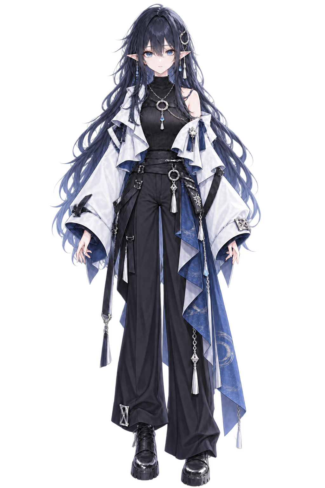

雑談
眠れない夜の、ゆるいおしゃべり。
🌙💧 気ままな夜ふかしVTuber
01 / ABOUT
夜に、少しだけ。
はじめまして、宵澪莉です。
夜にゲームをしたり、雑談したり、作業したりしてます。
眠れないときとか、なんとなく誰かと話したいときに、 ふらっと寄ってくれたらうれしいです。
―― 宵人のみんなも、はじめましての人も。
02 / STREAM
寄り道の過ごし方。
ゲーム
うまさより、一緒に楽しむ時間を。作業配信
それぞれの作業を、同じ夜に。03 / SCHEDULE
次の寄り道。
04 / LINKS